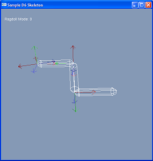
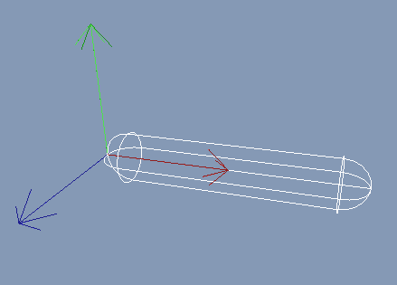
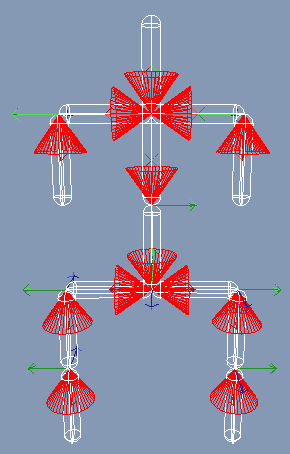

Skeletal Animation and Rag Dolls

One of the primary aims when creating the d6joint was to integrate the flexibility and features necessary for sophisticated
character animation and rag doll effects. To this end, the d6joint
provides the following features which make it particularly suitable for
character animation:
- Sophisticated angular and linear drive model
- Capability to be driven using combined angular position and
velocity targets - important for achieving smooth animation
- Choice between twist and swing or SLERP angular drive. A SLERP drive
moves the joint along the shortest spherical arc to a target
orientation which reflects the behavior of many existing skeletal
animation systems.
- Flexible joint limits. Being able to specify realistic joint
limits for skeletal joints is important for realistic rag doll effects.
The range of motion, for example, of a shoulder, is quite complicated; specifying this range of motion using simple point/plane limits is not
generally possible.
A Simple Skeletal Animation System
A skeletal animation system generally provides a base pose for a
skeleton along with a set of animation keys. In an average system, the
keys can take the form of rotational keys or positional keys. The
following example considers only rotational keys since they are
the most common and the most difficult.
For each frame of animation, a blended rotation key is computed and
applied as a relative rotation to the base pose.
Creating Bone Shapes
The first step is to create actors to represent each bone; a
convenient primitive for this is the capsule
shape. When specifying bone transforms, the
convention that the bone lies along the x-axis in its local space is used, which matches the d6joint axis convention. To orient the capsule shapes
correctly, compute and set a shape rotation which orients the
capsule to point along the x-axis (the SDK convention is that a capsule
points along the y-axis). Translate the capsule so that
its end point touches the actors origin.
NxVec3 parentPt=parent->basePose*NxVec3(0.0f,0.0f,0.0f);
NxVec3 ourPt=basePose*NxVec3(0.0f,0.0f,0.0f);
NxCapsuleShapeDesc capsuleDesc;
capsuleDesc.radius=0.1f;
capsuleDesc.height=boneLength-capsuleDesc.radius*2.0f;
NxFindRotationMatrix(NxVec3(0.0f,1.0f,0.0f),NxVec3(1.0,0.0f,0.0f),capsuleDesc.localPose.M);
capsuleDesc.localPose.t=NxVec3(boneLength/2.0f,0.0f,0.0f);
actorDesc.shapes.pushBack(&capsuleDesc);
NOTE: Be aware that changing a shapes transform in this way will alter the
center of mass and inertia tensor of the actor.
Create the Joints
It is necessary to create the d6joints for each bone orientated appropriately
in the base pose of the skeleton. For this exercise, use the convention that the
twist axis (x-axis) points along the child bone and that the joint
frames of the parent and child body are aligned in the base pose.

The red axis in the above screen shot is the twist axis, and the bone
is represented as a capsule. The green and blue axes are the swing axes.
In the example code below, the joint is attached to the parent bone. Then the joint's axis is oriented to point along the x-axis in the child frame.
This requires transforming the localAxis[0] member into the frame of
the parent actor since localAxis (and localNormal) are relative to their
respective actors.
localPose is the relative transform between child and parent, while
basePose is the transform to the global frame.
if(parent!=NULL)
d6Desc.actor[0]=parent->actor;
else
d6Desc.actor[0]=NULL;
d6Desc.actor[1]=actor;
d6Desc.localAxis[0]=localPose.M*NxVec3(1.0f,0.0f,0.0f);
d6Desc.localAxis[1]=NxVec3(1.0f,0.0f,0.0f);
d6Desc.localNormal[0]=localPose.M*NxVec3(0.0f,1.0f,0.0f);
d6Desc.localNormal[1]=NxVec3(0.0f,1.0f,0.0f);
d6Desc.setGlobalAnchor(basePose*NxVec3(0.0f,0.0f,0.0f));
Since only applying angular animations to the bones, setup
the d6Joint as a spherical joint by locking all the linear DOFs and
leaving the angular ones free or limited.
d6Desc.xMotion = NX_D6JOINT_MOTION_LOCKED;
d6Desc.yMotion = NX_D6JOINT_MOTION_LOCKED;
d6Desc.zMotion = NX_D6JOINT_MOTION_LOCKED;
d6Desc.twistMotion = NX_D6JOINT_MOTION_FREE;
d6Desc.swing1Motion = NX_D6JOINT_MOTION_FREE;
d6Desc.swing2Motion = NX_D6JOINT_MOTION_FREE;
Disabling Contact Generation between Bones
When animating a bone, we do not want contacts to be
generated between shapes which are attached to the same parent.
If this happens, the contact points will interfere with the motion of the
bones. To ensure this doesn't happen, call NxScene::setActorPairFlags() specifying
each pair of child bones in turn.
foreach(np in boneChildren)
foreach(nq in boneChildren)
{
if(np==nq)
continue;
gScene->setActorPairFlags(np->actor,nq->actor,NX_IGNORE_PAIR);
}
Angular Drive
Once the above setup work is complete, it is time to drive the
skeleton so that it follows the key framed animation. As a first pass, drive the angular orientation/position to match just the position
of the key frames. In the next section, we will drive the velocity
for smoother animation.
To set the angular drive when
creating the joint, specify the appropriate angular drive
parameters. Use a SLERP drive (instead of a twist and
swing) to mimic the behavior of the animation system.
The spring parameter specifies the amount of force needed to
keep the physical representation in sync with the animation data.
Setting a higher value will cause the physical bodies to
match the animation more closely. The damping parameter is used to
smooth out oscillations of the actors when correcting
their position to match the key framed animation.
d6Desc.flags|=NX_D6JOINT_SLERP_DRIVE;
d6Desc.slerpDrive.driveType=NX_D6JOINT_DRIVE_POSITION;
d6Desc.slerpDrive.forceLimit=0.0f; //Not used with the current drive model.
d6Desc.slerpDrive.spring=250.0f;
d6Desc.slerpDrive.damping=0.01f;
Next, update the target position for each bone as they are
animated. This is simply a matter of calling
NxD6Joint::setDriveOrientation() for each animation frame with a new
relative orientation to the joint's parent frame.
joint->setDriveOrientation(parent->animTarget);
NOTE: For this example, assume that joint
animation data is the same for each child bone; therefore, store the data in the
parent.
Angular Velocity Drive
In some cases, applying an additional velocity drive to the joint can
improve the joint's ability to follow the animation track, i.e., the velocity drive
provides an additional cue to the SDK about where the joint will be in
the next time step, in addition to providing the position of the joint in
the current time step.
Enabling the velocity drive is simply a matter of specifying the
appropriate flag on joint creation:
d6Desc.flags|=NX_D6JOINT_SLERP_DRIVE;
d6Desc.slerpDrive.driveType=NX_D6JOINT_DRIVE_POSITION | NX_D6JOINT_DRIVE_VELOCITY;
d6Desc.slerpDrive.forceLimit=0.0f;
d6Desc.slerpDrive.spring=250.0f;
d6Desc.slerpDrive.damping=0.01f;
It is necessary to update the drive's angular velocity target and the positional target at the same time:
if((parent!=NULL)&&(joint!=NULL))
{
joint->setDriveOrientation(parent->animTarget);
joint->setDriveAngularVelocity(parent->animVelTarget);
}
The velocity target can be approximated from the animation track in a
number of ways. Below is a simple approximation using quaternion math:
NxVec3 SkeletonNode::ComputeAnimDeriv(float t)
{
const float h=0.2f;
const float h2=2.0f*h;
NxQuat rot0=ComputeAnimRot(t-h);
NxQuat rot1=ComputeAnimRot(t+h);
rot0.invert();
NxQuat deltaRot=rot1*rot0;
if(deltaRot.w<0.0)//Quaternions should be in the positive hemisphere.
{
deltaRot.x=-deltaRot.x;
deltaRot.y=-deltaRot.y;
deltaRot.z=-deltaRot.z;
deltaRot.w=-deltaRot.w;
}
return NxVec3(deltaRot.x/h2,deltaRot.y/h2,deltaRot.z/h2);
}
Turning the Skeleton into a Rag doll
At some point, for example when a character dies, it becomes necessary
to turn off key frame animation of the skeleton and resort to pure
physical simulation. This is simply a matter of disabling the SLERP
drive for each of the d6joints.
if(isKeyframed)
{
d6Desc.slerpDrive.driveType=NX_D6JOINT_DRIVE_POSITION;
d6Desc.slerpDrive.forceLimit=0.0f;
d6Desc.slerpDrive.spring=250.0f;
d6Desc.slerpDrive.damping=0.01f;
}
else
{
d6Desc.slerpDrive.driveType=0;
d6Desc.slerpDrive.forceLimit=0.0f;
d6Desc.slerpDrive.spring=0.0f;
d6Desc.slerpDrive.damping=0.0f;
}
joint->loadFromDesc(d6Desc);
Joint Limits

As soon as the key framed animation is turned off, notice that
the skeleton folds up in an unrealistic manner. A real skeletal joint
has anatomically imposed limits on its motion. To make the rag doll
behave in a more realistic manner, it is necessary to approximate these limits.
The first type of limit to apply is a twist limit, which constrains
how much a joint can rotate about its twist axis (bone axis). To do so,
specify a high and low angular value for the limit. In
anatomical joints, the amount of twist tends to be quite small, although
it varies between joints. For example, a shoulder joint can twist more
than an elbow joint.
if((parent->twistLowLimit!=0.0f)||(parent->twistHighLimit!=0.0f))
{
d6Desc.twistMotion = NX_D6JOINT_MOTION_LIMITED;
d6Desc.twistLimit.low.value=NxMath::degToRad(parent->twistLowLimit);
d6Desc.twistLimit.low.damping=0.0f;
d6Desc.twistLimit.low.restitution=0.0f;
d6Desc.twistLimit.low.spring=0.0f;
d6Desc.twistLimit.high.value=NxMath::degToRad(parent->twistHighLimit);
d6Desc.twistLimit.high.damping=0.0f;
d6Desc.twistLimit.high.restitution=0.0f;
d6Desc.twistLimit.high.spring=0.0f;
}
The swing limits constrain how much the joint can rotate around its
other two axes. They are slightly less flexible than the twist joint,
in that only a single angle can be specified; the limit is assumed to
be symmetrical around the base pose. To achieve realistic limits, it is
necessary to set up the base pose so that each joint is at
the center of its arc (or alternatively manipulate the joint frames
during setup). If both swing1 and swing2 limits are specified, the
joint has a range of motion which can be represented by an elliptical
cone.
if(parent->swing1Limit!=0.0f)
{
d6Desc.swing1Motion = NX_D6JOINT_MOTION_LIMITED;
d6Desc.swing1Limit.value=NxMath::degToRad(parent->swing1Limit);
d6Desc.swing1Limit.damping=0.0f;
d6Desc.swing1Limit.restitution=0.0f;
}
if(parent->swing2Limit!=0.0f)
{
d6Desc.swing2Motion = NX_D6JOINT_MOTION_LIMITED;
d6Desc.swing2Limit.value=NxMath::degToRad(parent->swing2Limit);
d6Desc.swing2Limit.damping=0.0f;
d6Desc.swing2Limit.restitution=0.0f;
}
API Reference
Copyright © 2008 NVIDIA Corporation, 2701 San Tomas Expressway, Santa Clara, CA 95050 U.S.A. All rights reserved. www.nvidia.com